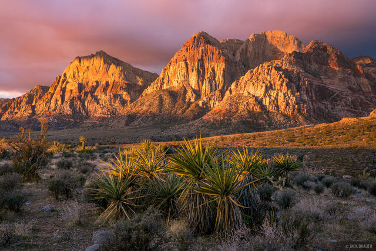

The Mojave Desert is a vast, arid region spanning southeastern California, southern Nevada, and small parts of Arizona and Utah. Known for its stark beauty and dramatic landscapes, it is one of North America’s driest deserts. Despite its harsh conditions, the Mojave supports a surprising range of ecosystems shaped by elevation, temperature swings, and seasonal rainfall. Its boundaries are often defined by surrounding mountain ranges and neighboring deserts like the Sonoran and Great Basin.
One of the most iconic features of the Mojave is the Joshua tree, a twisted, spiky plant that has become a symbol of the region. These unusual trees dominate large stretches of land, particularly within Joshua Tree National Park, where they create an otherworldly landscape. Alongside them, hardy shrubs, cacti, and wildflowers have adapted to survive extreme heat, poor soil, and limited water. After rare rainfalls, the desert can briefly burst into vibrant color with seasonal blooms.
The Mojave is also home to extreme geological features, including Death Valley, which contains the lowest point in North America at Badwater Basin. Temperatures here can soar to some of the highest ever recorded on Earth. Sand dunes, salt flats, volcanic formations, and rugged mountains all contribute to the region’s diverse terrain. These features make the Mojave a popular destination for scientists, photographers, and travelers seeking dramatic natural scenery.
Despite its seemingly inhospitable environment, the Mojave Desert has long been inhabited by humans. Indigenous peoples lived in the region for thousands of years, developing deep knowledge of its resources. Today, the desert includes military installations, small towns, and major transportation routes. It also faces modern challenges such as climate change, water scarcity, and urban expansion, all of which threaten its fragile ecosystems and unique biodiversity.